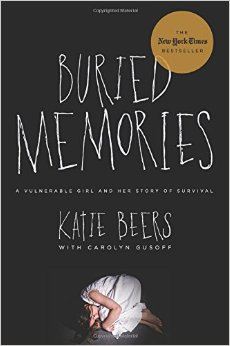

Bio
Carolyn is currently working as an on-air reporter at WCBS-TV in New York City covering the Long Island beat. She came to CBS2 in 2012 after three years at Fox5 WNYW where she often covered the lead story of the day on Good Day New York. Prior to that, she was with WNBC for 15 years. In addition to her reporting role as Long Island Bureau Chief, she co-anchored the station’s top-rated Saturday and Sunday morning program Weekend Today in New York for five years.
Carolyn Gusoff's reporting over the last three decades includes some of the biggest New York stories of our time: the terror attacks of 9/11, the NYC transit strike, the blackout and the massacre on the Long Island Railroad. More recently, she reported tirelessly on the devastation wrecked by Hurricane Sandy, the tragic July 4th Oyster Bay boat capsizing, the "Occupy Wall Street" protests, the Long Island drug store massacre, the "Ground Zero" Mosque controversy and the "friendly fire" shooting death of a Hofstra University student. She was one of the first reporters on the scene at three commercial jetliner crashes including Avianca Flight 52, TWA Flight 800 and American Airlines Flight 587. During the Blizzard of '96, Gusoff reported for 36 hours straight on the historic storm's toll and has been in the thick of nearly every major weather event to strike the New York area since, including the 2013 Blizzard which buried Suffolk County in three feet of snow.
Gusoff moved to NBC from News 12 Long Island where she was credited for in-depth coverage of national stories such as the kidnapping of Katie Beers, the Tankleff murders and the Amy Fisher/Joey Buttafuoco scandal. She covered the police/crime beat, courts, the United Nations during the Persian Gulf conflict, and national political conventions. She also worked as primary fill-in anchor for the nation’s first 24-hour regional news network. Her broadcasting career began as anchor and reporter for the ABC affiliate, WEVU-TV, in Fort Myers, Florida.
Carolyn has written for the New York Times, Newsday, and is a frequent opinion page contributor and Internet blogger. She has survived cancer and working motherhood (so far) and speaks publicly with passion and humor about both challenges. Her collaboration with Katie Beers on Buried Memories earned her the distinction as a New York Times best-selling author. The book has also been #1 in Amazon e-book sales for True Crime and Motivational Memoir and has topped the best seller lists in the UK published by Virgin Books/Random House entitled Help Me.
Gusoff holds a Master of Science Degree in Journalism from Columbia University and a Bachelor of Arts Degree in Government and English from Cornell University, where she was Editor-in Chief of The Cornellian and a U.S.Congressional intern for then Senator Joe Biden and U.S Senator Alfonse D'Amato.
She is currently a Cornell Alumni Admissions Ambassador and devotes much of her time in leadership roles to charitable causes and local community organizations. She has emcee'ed events for The American Heart Association, The American Red Cross, The American Cancer Society , The Princess Grace Foundation, Northshore University Hospital, The Marcum Workplace Challenge and The Association of Fundraising Professionals, to name just a few. Carolyn is a recent recipient of the Public Relations Professionals of Long Island’s Outstanding Media Member Award.
Gusoff was born in New York City and lives in Nassau County with her husband and their two children.
Awards
Her many honors include three New York Emmy Awards and fourteen New York Emmy nominations. Most recently, she was part of the winning team that earned WCBS an Emmy for its coverage of Superstorm Sandy. In 2004, Gusoff was awarded a New York Emmy Award for On-Camera Performance/General Assignment Reporting for the Mepham Hazing Scandal.
Gusoff won the 2015 FOLIO award for Best Spot News Report for her coverage of Long Island flash floods and four Fair Media Council 2014 Folio Awards in the categories of Health, Science, Environment and Coastal News. She was awarded five 2013 FOLIO awards for her continuing coverage of Superstorm Sandy and in the categories of "Tax Accountability News," "Energy News," "Affordable Housing News," and "Health Reporting." She has garnered dozens of Long Island Fair Media Council FOLIO awards in categories ranging from "Best Feature" to "Best Blog," “Enterprise Reporting” and "Investigative Journalism," and seven first-place Society of Professional Journalists/Press Club of Long Island awards. Carolyn has also been recognized by The American Women in Radio and Television, The Associated Press/New York Spot News Award and with the United Press International/New York Broadcast Award.
Books
Order Carolyn's book, Buried Memories


Social